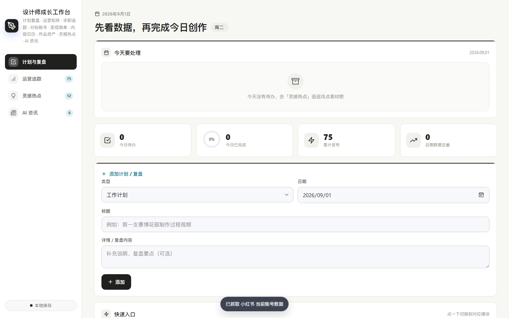
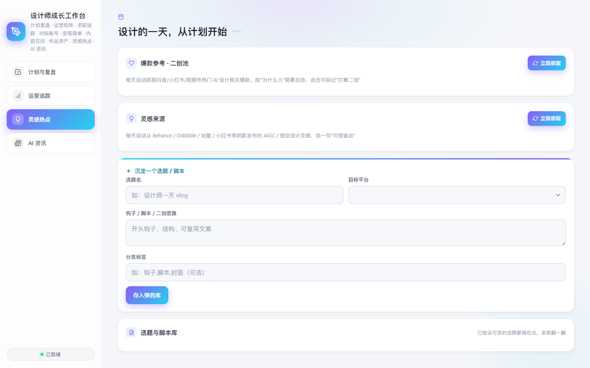
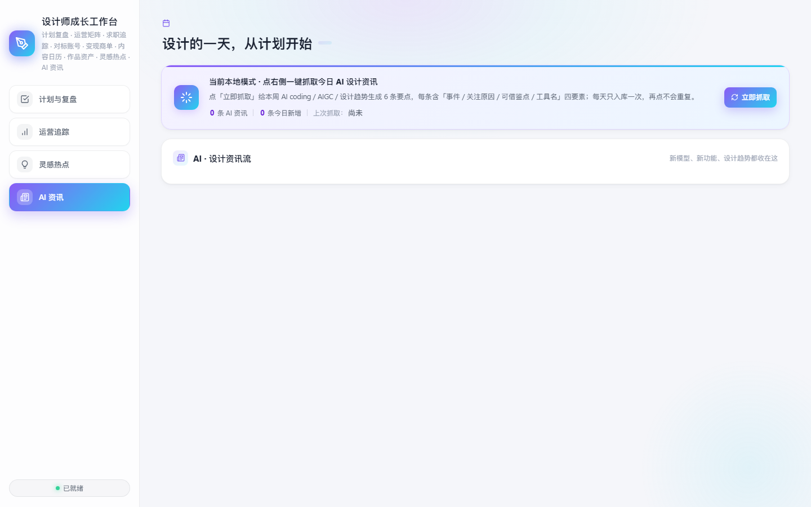

计划与复盘
记录今日计划与阶段复盘，让项目推进有迹可循。
这是一个为我自己的创作与账号运营而搭建的工作台。我希望减少在手机里翻找资料、记录灵感和切换工具的时间，同时更方便地了解账号数据，判断接下来应该往哪个方向改进。这个想法也受到抖音创作者胡楚靓分享的工作流内容启发，并通过 Vibe Coding 快速完成第一版验证。
把零散的灵感、项目状态、待办事项、账号数据与常用创作入口放到一个清晰的工作界面中。重点不是堆叠功能，而是建立更顺手的个人创作节奏：打开就知道今天要推进什么、项目进行到哪里，以及下一步要做什么；随着新的使用需求出现，工作台也会持续更新。
首页把今日待办、完成进度、累计发布和近期数据汇总放在第一屏，下方直接进入计划与复盘。这是我最常用的工作场景：快速确认状态，再开始行动。

记录今日计划与阶段复盘，让项目推进有迹可循。
汇总账号内容与数据表现，辅助下一步的运营判断。
自动收集值得保存的素材、选题和参考，集中归档。
自动抓取关注的信息，减少在多个平台之间反复跳转。
围绕“记录、判断、收集、获取信息”四个动作展开。灵感热点与 AI 资讯将自动抓取的信息整理成可浏览的卡片；在工作台中，点击「查看原文」可直接跳转回对应来源页面继续阅读。
从内容与数据变化中判断下一步优化方向


设计原则：像一张安静、容易开始的工作桌，信息层级清晰，常用操作尽量留在首屏。
从需求梳理、页面结构到界面细节，我将 AI 作为共创伙伴，用自然语言持续迭代。这个过程让我能把设计判断、交互想法和开发实现放在同一条工作流里快速验证；目前仍会根据真实使用体验和新的需求持续优化。